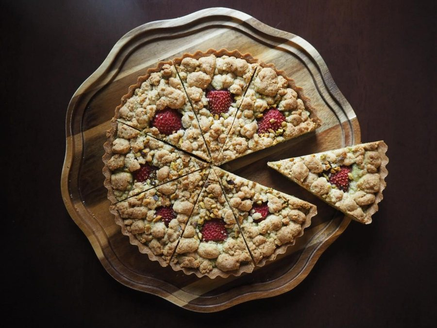
季節のタルト
「その日、そのときの気分でお出しする」日替わりのタルトです。何に出会えるかは、その日のお楽しみに。
BAKED SWEETS & COFFEE — FUJIMINO
お菓子は、小さな手紙のように。
ふじみ野市大井の、焼き菓子と喫茶の店。
11:30〜18:00｜営業日はInstagramで｜イートイン・テイクアウト可
ABOUT
店名の dear_， は、手紙のはじまりに書く「Dear ○○」から。お菓子が「誰かへの想いを届ける 小さな『手紙』のような存在になれたら」という願いを込めた名前です。
店内には黒猫の置物がそこここに置かれ、クチコミにも「猫の置物があちこちにあって、猫好きには嬉しかったです」と書いていただきました。米粉を使ったお菓子もあり、メレンゲはすべて米粉です。小麦のお菓子とは違う軽さがあります。
「年代や性別、おひとり様やグループかも関係なく、どなたでも気軽にお越しいただける場所にしたい」——Instagramに綴った、この店の願いです。
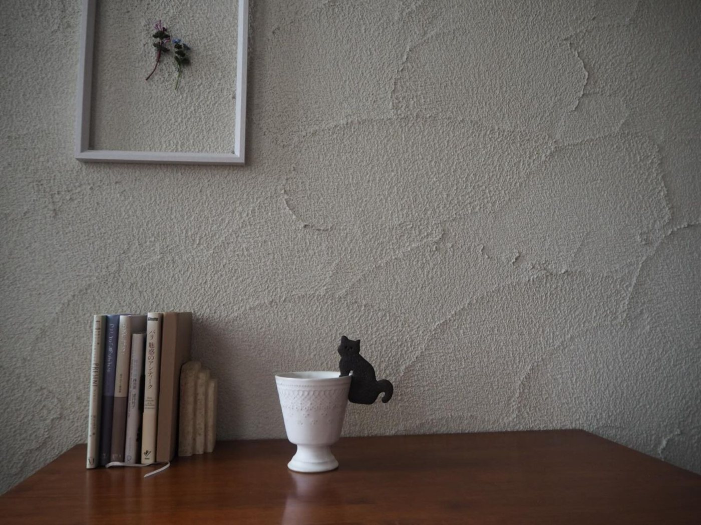
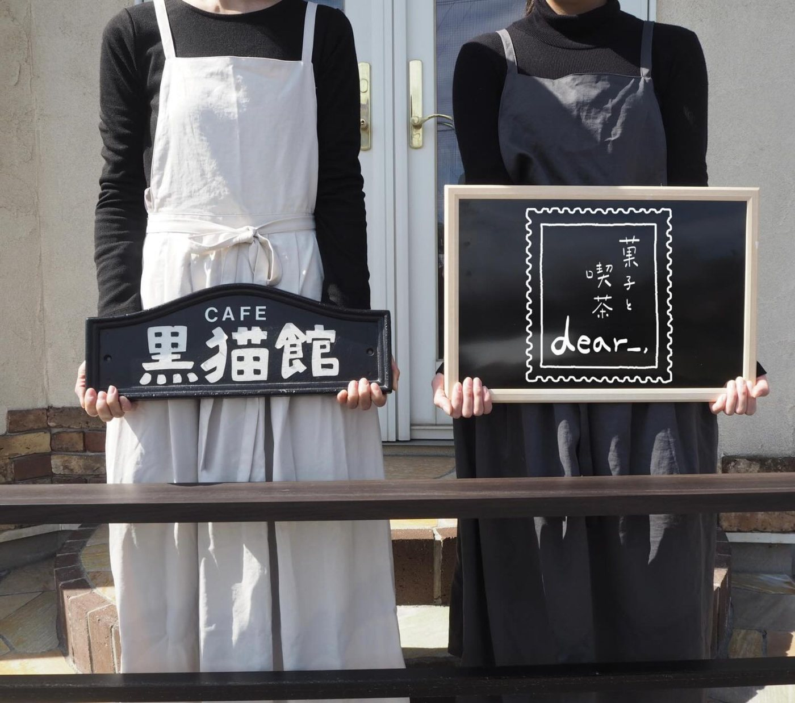
SINCE 2026
この場所には以前、母が営んでいた喫茶店「cafe 黒猫館」がありました。その場所を引き継ぎ、2026年4月に菓子と喫茶 dear_， として開きました。
Instagramに記したのは「大切にしてきたものはそのままに、少しずつ私らしさを重ねて」という一文でした。カップのふちにそっとのせる黒ねこのクッキーも、「黒猫館」の記憶を少しだけ重ねてつくったものです。
「発酵バターが香る美味しい焼き菓子が色々あります」Googleのクチコミより
GALLERY
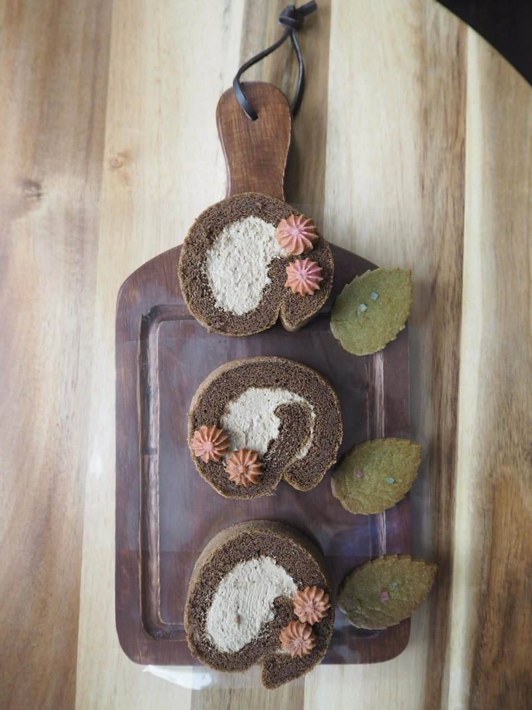
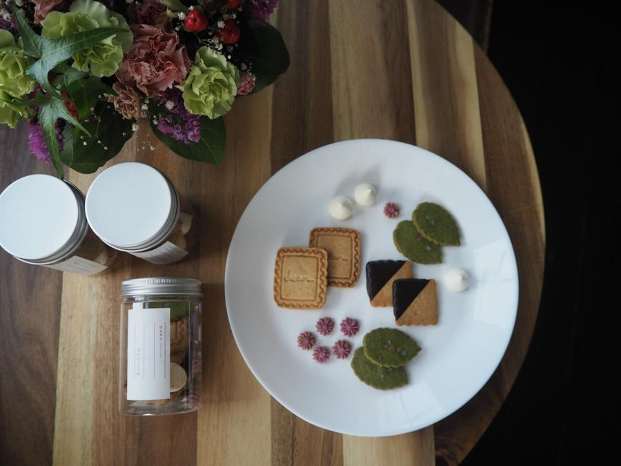
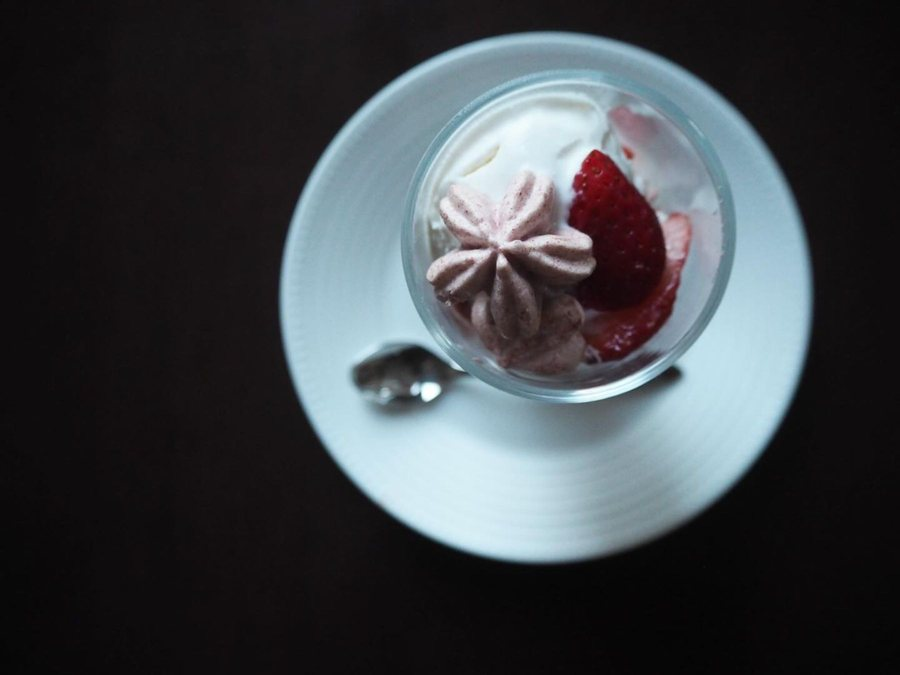
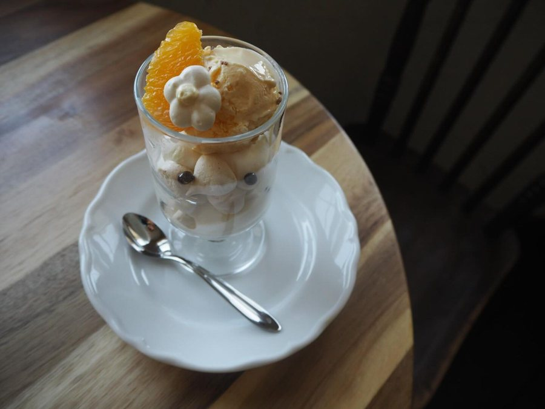
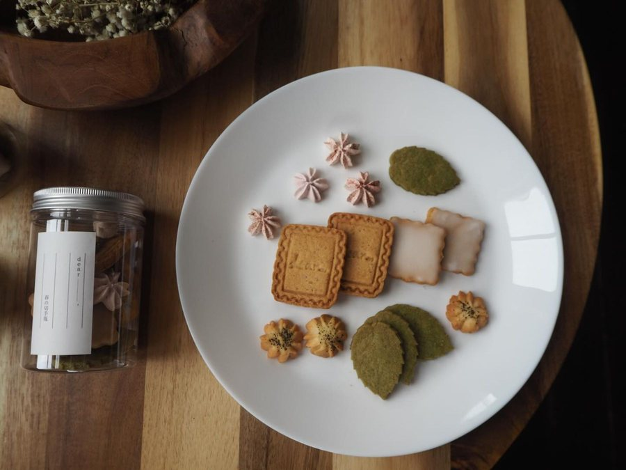
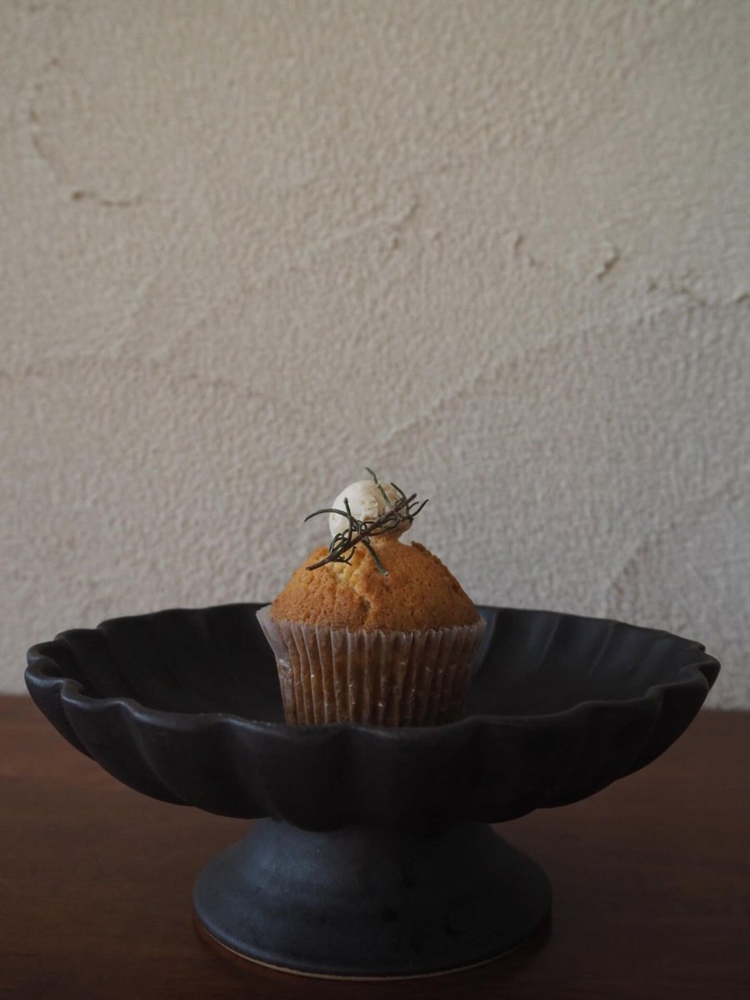
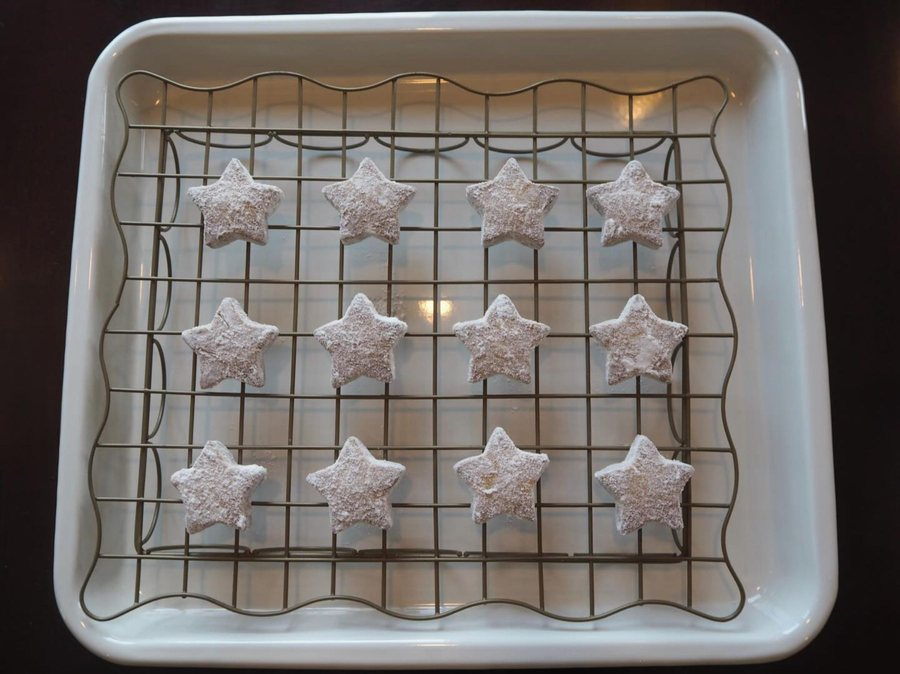
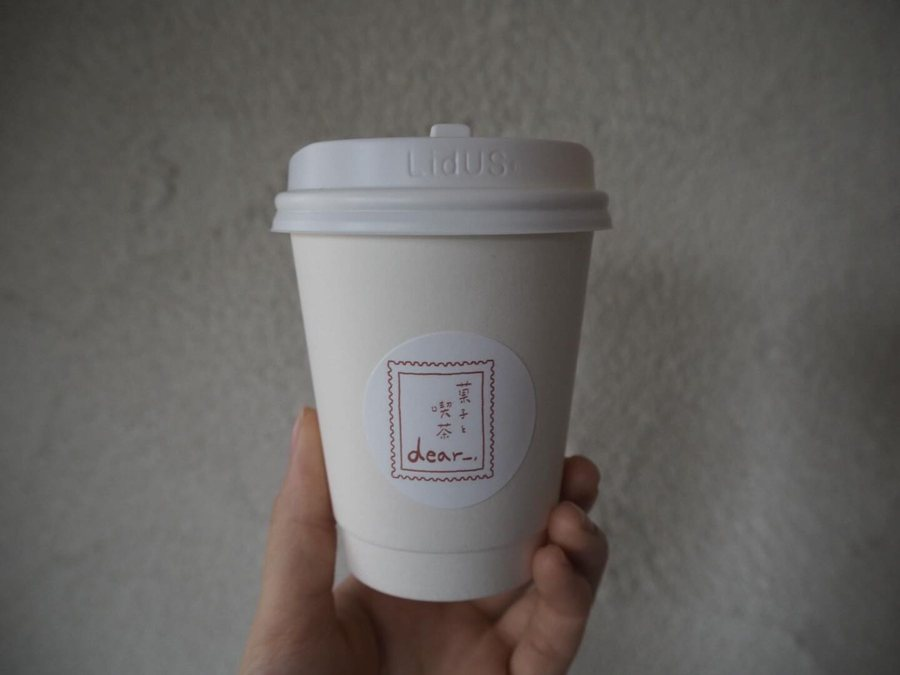
SHOP INFO
| 店名 | 菓子と喫茶 dear_，（ディア） |
|---|---|
| 住所 | 埼玉県ふじみ野市大井2-19-14 |
| アクセス | 東武東上線ふじみ野駅 |
| 営業時間 | 11:30〜18:00 |
| 営業日 | 土日を中心に営業しています。 最新の営業日はInstagramでお知らせしています。 |
| ご利用 | イートイン・テイクアウトどちらも可 |
| 電話 | 080-6333-3951 |
CONTACT
営業日やその日のお菓子は、Instagramでお知らせしています。オンラインでの焼き菓子の販売も承っております。